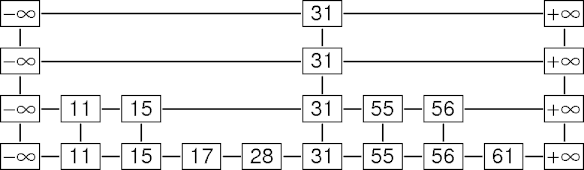

A skip list is a data structure that is used for storing a sorted list of items with a help of
hierarchy of
linked lists that connect increasingly sparse subsequences of the items. A skip list allows the process
of item
look up in efficient manner.
The skip list data structure skips over many of the items of the full list in one step, that’s why it is
known as skip list
|
Average Case |
Worst Case |
| Space |
O(n) |
O(nlog n) |
| Search |
O(log n) |
O(n) |
| Insert |
O(log n) |
O(n) |
| Delete |
O(log n) |
O(n) |
